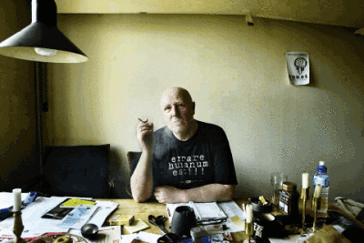

| 15. August 2003 |
Kritikeren: Husk skyggesiden

Foto: David Høgsholt
Af Ida Buhl
Knud Vesterskov tilhører den gamle garde, og kan stadig huske det, han betragter som Københavns første pride, hvor 15 regnvåde homoseksuelle gik gennem Strøget. Han mener, at dette års parade svigter de svageste i miljøet.
På væggene hænger sort/hvide erotiske portrætter af smukke drenge. Knud Vesterskov viser vej til spisekøkkenet og tænder en cigaret med en ud af adskillige identiske lightere dekoreret med pin-up piger. På køkkenets hvidgule vægge reklamerer en hjemmegjort løbeseddel for et performance-arrangement. Knud Vesterskov er 61 år og tilhører den gamle garde. Han kan stadig huske det, han betragter som Københavns første pride, hvor 15 regnvåde homoseksuelle med transen Herta i front gik gennem Strøget udstyret med et vådt skilt med et udvandet bøssetegn. Han mener, at dette års parade svigter de svageste i miljøet.
Hvorfor skal der være en parade?
»Alle større byer skal efterhånden have en parade, hvor bøsser og lesbiske går sammen og laver en manifestation af deres eksistens: Vi er stolte, og vi er her. Sådan en manifestation er flot en gang om året.«
Er homoseksuelle ikke allerede så accepterede i det danske samfund, at Priden er blevet overflødig?
»De kredse, som søger tolerancen, er begyndt at få den. Det er de straight acting, altså de homoseksuelle, der hverken i påklædning eller kropssprog adskiller sig fra resten af befolkningen, men tværtimod gør så meget for at passe ind som muligt. De bliver tolereret og accepteret. Det er også dem, vi ser i medierne, i TV-serier, hvor de kysser hinanden farvel i døren om morgenen og den ene har smurt madpakke til den anden og bliver hjemme for at gå med hunden.«
Hvad er der tilbage at kæmpe for?
»Det er ikke nok at blive accepteret eller tolereret. Vi skal respekteres - også for det, der gør os anderledes. For vi er anderledes. Vi har et helt spektrum af følelser, oplevelser og mindreværd, og hele det spektrum er med til at skabe os. Og dermed har vi også ansvaret for de bøsser, der er feminine i deres adfærd, og for de transseksuelle. Vi må tage hele baduljen og sige: Det er det her, vi er. På den måde er paraden nødvendig. Den skal vise, at vi ikke gemmer noget væk. De hysteriske koner er også med, og det er dem, vi hylder med priden. For vi vil respekteres for vores egne kvaliteter. Det er der, kampen skal flyttes hen.«
Bliver de transseksuelle ikke accepteret som det er i dag?
»Nu er der jo ikke den store tolerance indenfor de homoseksuelle grupper selv. Det ser du i dag med transseksuelle, der stadig sidder rundt omkring på nervepiller og drikker kaffe, fordi de ikke tør gå udenfor en dør. De føler sig til grin, selv når de går ind på et homosted. De føler sig stadig som udskud. Det er ikke sådan nu, at du bare kan klæde dig ud som den dame, du altid føler, at du har været. Slet ikke. Og det er dem, vi må have med i vores kamp. Det nytter ikke noget at halvdelen, som kan være straight acting, bliver respekteret. Resten skal også med.«
Hvorfor er de transseksuelle så vigtige for dig?
»Hvis vi fornægter dele af vores kultur, krakelerer den. Det var de transseksuelle, der startede hele oprøret og priden. Det er miljøets frihedskæmpere. Men nu er de ladt tilbage, og man vil kun have glæde og fest, Grand Prix og Madonna. Det, der endnu gør ondt, skal gemmes væk.«
Hvad skal man gøre i stedet?
»Man kunne jo forsøge at få alle med i den. Man sætter de transseksuelle på toppen af kransekagen. De straight acting har ikke brug for det, de skal nok klare den. De transer sig lidt ud i dagens anledning, går til work out og smører sig ind i glimmer og solbruner. Og så står de der i deres små bukser og opfører en diskodans, som er blevet bøssernes parringsdans. For udenforstående er det jo festligt. Der er karneval i byen. Men ellers betyder det ikke noget.«
Hvornår ville det betyde noget?
»Det ville betyde noget, hvis man fik alle med. Mødregrupperne skal med, AIDS-patienterne skal med. Det er meget vigtigt, at de HIV-positive også er en del af os. For det er ikke bare guldlamé. Det er også dybt alvorligt. Det skal ikke være en skøjten på overfladen, for vi er mere end sølvglimmer, der bevæger sig til diskomusik.«
Du taler om en top- og en bund i det homoseksuelle miljø. Er det et udtryk for, at der både er en høj- og en lavkultur i miljøet?
»Ja, og det var jo netop derfor, vi skulle have en parade. For at repræsentere alle forskellighederne. Men det gør man ikke. I stedet tager man alt det festlige og fornøjelige og lukker butikken for alt det ubehagelige. Nazitiden, bøsser i koncentrationslejre, den grimme lov i 50ernes Danmark.
En lov, som f.eks. forbød sømænd at komme tættere på toiletterne på Rådhuspladsen end 100 meter. Man troede dengang, at man blev forført til homoseksualitet. På de offentlige toiletter kom der politistikkere, og dem, der blev arresteret, fik voldsomme fængselsstraffe. Det endte helt grotesk med, at man skulle lade sig kastrere, hvis man ville ud af fængslerne. De folk, der i 50erne blev kastrerede, fordi de var bøsser, de lever altså endnu. Vi skal vide, hvor vi kommer fra.«
Hvorfor skal I vide det?
»For eksempel har vi lige set, at bispen ikke vil acceptere, at de homoseksuelle bliver viet borgerligt i våbenhuset, og så bagefter går ind i kirken og får en velsignelse. Det har fundet sted i flere år, og det er der mange præster, der gerne vil gøre. Men det stopper altså nu. Det viser, at vi står på et meget tyndt grundlag. Og hvis du ikke har historien med, hvor skulle du så ane det fra? Fundamentalisme har altid været og er stadig en af de homoseksuelles værste fjender. Og det er alle former for fundamentalister - også dem vi har ovre på vestkysten indenfor vores egen religion.«
www.berlingske.dk/kultur/artikel:aid=348186
Print denne side